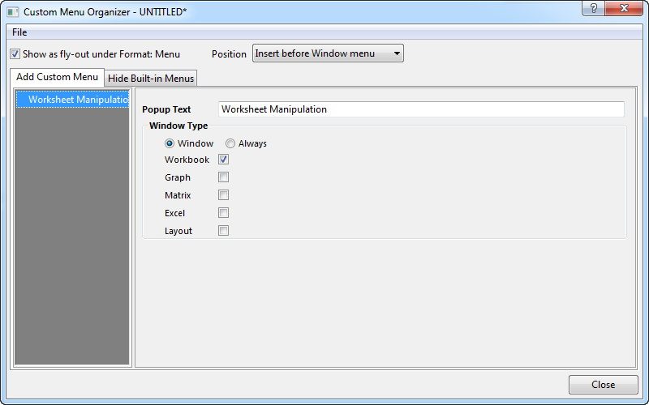
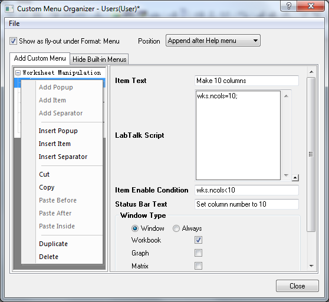
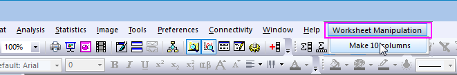

Benutzerdefinierte Menüs erstellen
Create-Custom-Menus
Mit dem Hilfsmittel Manager für benutzerdefinierte Menüs können Sie:
- Bis zu 3 Popup-Hauptmenüs erstellen, von denen jedes Menüs mit mehreren Ebenen unterstützt.
- Wiederholt verwendete LabTalk-Skripte/X-Funktionen einem Menüelement zuweisen.
- Die Verfügbarkeit eines Menüelements auf Instanzen beschränken, wenn Fenster eines bestimmten Typs aktiv sind.
- Teilen Sie benutzerdefinierte Menüs in Form einer .omc-Datei mit anderen.
- Verbergen Sie Standardmenüs Ihrer Wahl.
Das folgende Beispiel zeigt Ihnen, wie Sie ein Menü mit dem Namen Arbeitsblattmanipulation erstellen.
- Wählen Sie Einstellungen: Benutzerdefinierte Menüs verwalten im Origin-Menü.
- Wählen Sie im Menü Datei: Neu, um eine neue .omc-Datei zu erstellen.
- Klicken Sie mit der rechten Maus in das linke Bedienfeld Benutzerdefiniertes Menü hinzufügen und wählen Sie Neues Haupt-Popup. Geben Sie im rechten Teil Arbeitsblattmanipulation nach Popup-Text ein, wählen Sie die Option Fenster und aktivieren Sie nur Arbeitsmappe. So wird sicher gestellt, dass das Menü Arbeitsblattmanipulation nur verfügbar ist, wenn ein Arbeitsblatt aktiv.
- 
- Klicken Sie mit der rechten Maustaste auf Arbeitsblattmanipulation im linken Bereich der Registerkarte Benutzerdefiniertes Menü hinzufügen und wählen Sie Element hinzufügen im Kontextmenü. Füllen Sie die Bearbeitungsfelder im rechten Bereich der Registerkarte Benutzerdefiniertes Menü hinzufügen wie folgt aus:
- 
- Wählen Sie Datei: Speichern, um die Änderungen als .omc-Datei zu speichern. Gehen Sie zum Anwenderdateienordner. Geben Sie test.omc als Dateiname ein und klicken Sie auf OK.
- Schließen Sie den Manager des benutzerdefinierten Menüs.
- Wählen Sie Einstellungen: Menü: test im Hauptmenü. Aktivieren Sie ein Arbeitsblatt. Das Menü Arbeitsblattmanipulation sollte angezeigt werden.
- 
- Wenn das Arbeitsblatt weniger als 10 Spalten hat. Sie werden feststellen, dass das Menüelement Arbeitsspalten bis 10 ergänzen aktiviert ist. Wählen Sie es aus. Das Arbeitsblatt verfügt über 10 Spalten.
|
Bitte beachten Sie, dass alle .omc-Dateien im Systemordner, Anwenderdateiordner und Gruppenordner unter Einstellungen: Menü aufgeführt werden. Sie müssen eine von ihnen auswählen, um das benutzerdefinierte Menü zu aktivieren.
|
 |
- Wenn das Menü Hilfsmittel verborgen wurde und Sie den Dialog Benutzerdefiniertes Menü nicht vom Hauptmenü aus öffnen können, können Sie customMenu im Skriptfenster oder Befehlsfenster eingeben, um das Dialogfeld Manager des benutzerdefinierten Menüs zu öffnen.
- Ziehen Sie .omc-Dateien per Drag&Drop vom Windows Explorer in den Origin-Arbeitsbereich, um sie zu öffnen. Oder legen Sie die .omc-Datei direkt im Systemordner, Anwenderdateienordner oder Gruppenordner ab.
- Sie können das Start-Menü verbergen und die verbundene F1-Suchfunktion deaktivieren. Dies tun Sie über die LabTalk-Systemvariable @DSB = 1.
|